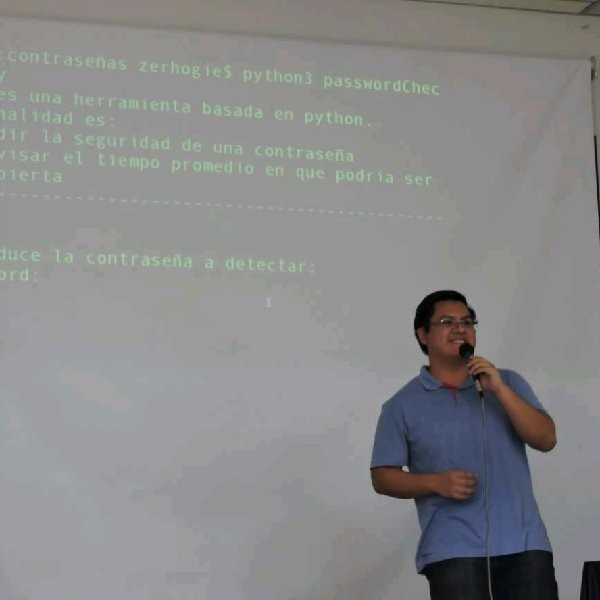

Saúl E.
Melchor
Ramírez
Software Engineer
Xalapa, Ver. México
+52 228 2310 336
Xalapa, Ver. México
+52 228 2310 336
Certification: "Certificado Profesional en Programación: Desarrollo Full-Stack con MERN".
Duration: 10 months.
Mongo / ExpressJS / ReactJS / NodeJS
Course: "Uso de Angular como herramienta para el desarrollo de aplicaciones web profesionales".
Duration: 30 hours.
Angular 8 / Angular Material / NGBootstrap
Master's degree in: "Redes y sistemas integrados".
Java / Spring Framework / Vue.js / Oracle Database / Network admin
Software Engineer.
Monography: Software Stability: A Systematic Literature Review
Professional certificate: 11917758
Requirements / Design / Documentation / Development / Testing / Deployment
Systematic review of the literature on Software Stability, presented in the 6th edition of the International Conference on Research and Innovation in Software Engineering.
DOI: 10.1109/CONISOFT.2018.8645866
Mendeley / Zotero
Teaching the course of "Network Systems Development" belonging to the Software Engineering Educational Program.
Java / ASP.NET Core / NodeJS
Developing "PRET" module, "Stamping" module and CDN management.
Docker / FastAPI / VueJS 3 / PostgreSQL / Django 3.2 / AWS
Teaching the course of "Application Development" belonging to the Software Engineering Educational Program.
Docker / Android / ASP.NET Core
Developing multiple projects based on prototipes created by a graphic designer.
HTML / SCSS / Vue.js / MDBootstrap / ASP.NET / SQL Server / Wordpress / JQuery